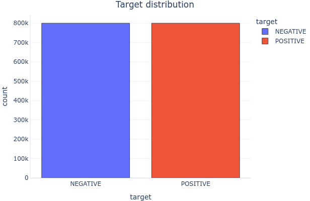
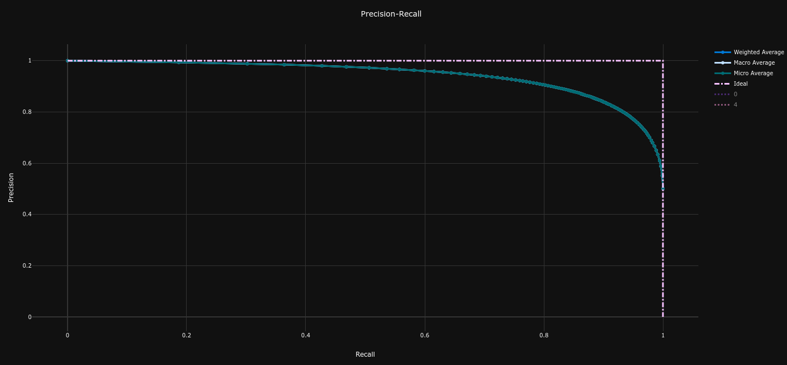
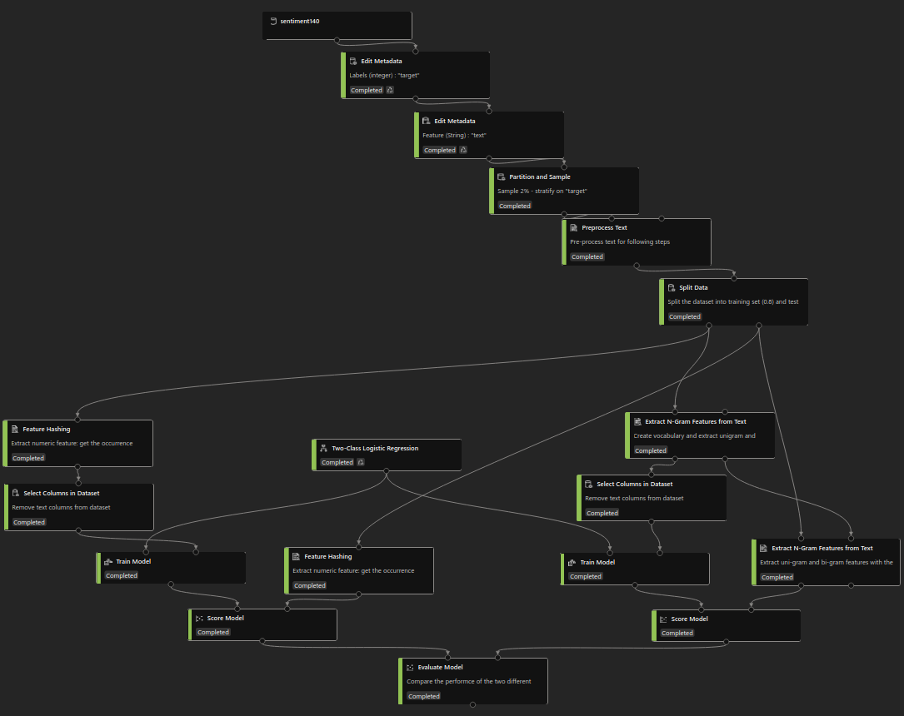
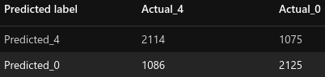
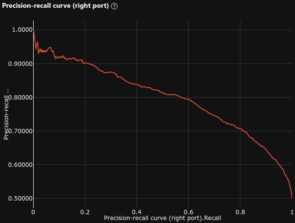
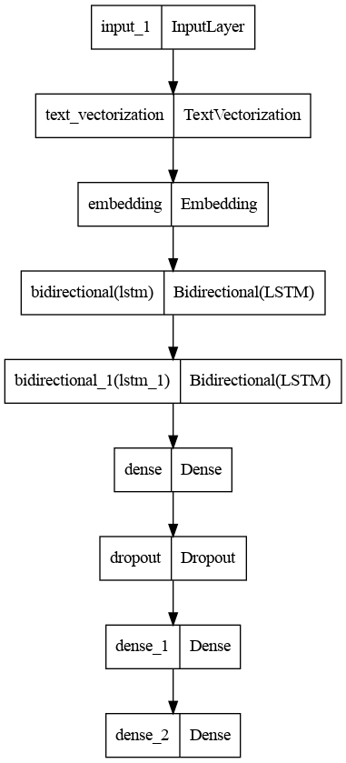
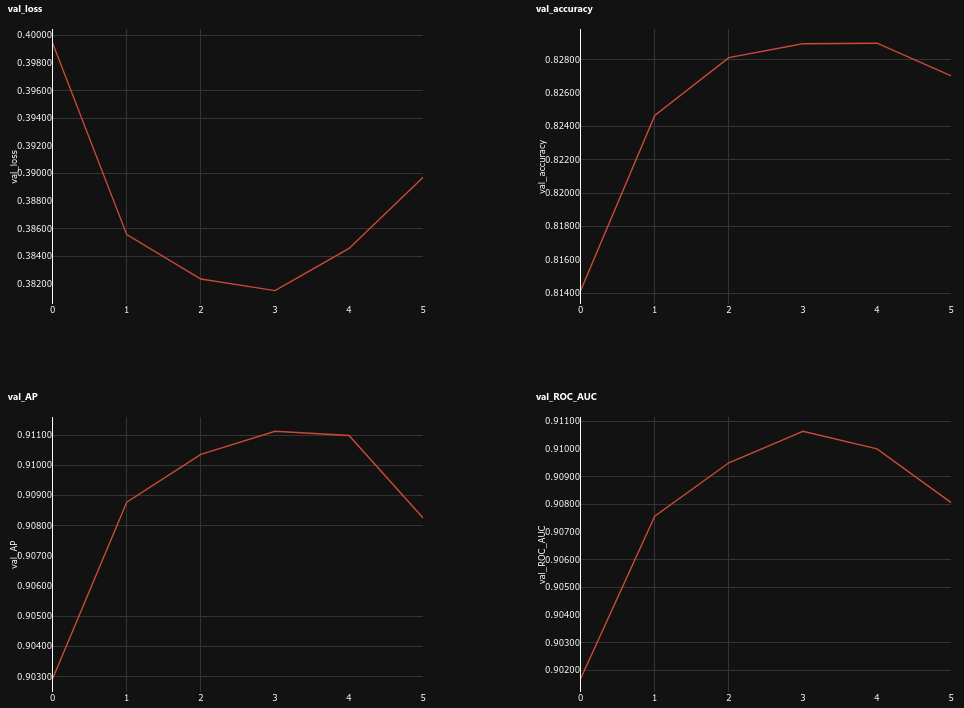

Imagine you are the head of Public Relations for a famous company. You want to prevent all the "bad buzz" that could affect the image of your company. To achieve this, you would need to be able to detect NEGATIVE messages on the Internet in order to act before the word spreads.
Sentiment Analysis is one of the most classic NLP problems : Given a piece of text, would you say its rather POSITIVE or NEGATIVE ?
It seems almost natural to a human mind to classify simple sentences :
"I love my friends because they make me happy everyday!" 👍
"My dog died today, I'm so sad..." 👎
But not all sentences are so "simple".
"OMG this is soooooooo sick ! Shut up and take my money XD" 🤔
There are multiple challenges that can make this task much more difficult :
In this article, we are going to cover different Azure services that we can use to predict the sentiment of tweets.
Spoiler : Each Azure service has its own purpose and offers more or less simplicity at the cost of control over the underlying prediction model.
All the code is available in Air Paradis : Detect bad buzz with deep learning.
Complete code available in notebook.ipynb
In this section, we are going to perform an EDA to understand the text and target variables.
The data we are going to use is Kaggle - Sentiment140 dataset :
0 = NEGATIVE4 = POSITIVELet's have a look at how the target variable is distributed.
The target variable is perfectly balanced :

Let's have a look at what the text variable looks like.
Examples :
"@SexyLexy54321 I dont wanna look like a clown!! lol I dont have yellow." -- @LucasLover321
"@Yveeeee And try to get me autographs, okay? " -- @sarahroters
"goodnight to everyone live at other side of world it's sunny in here =]" -- @dizaynBAZ
NEGATIVE tweets are slightly (not significantly) longer than POSITIVE tweets.
In both classes, there are two modes :

Let's see what words are most important in the text variable.
After cleanig the text (lowercase, stopwords, SpaCy lemmatization), we can see the most common words (Tf-Idf weighted) in the dataset :

Let's see what topics (group of words frequently found together) are important in the text variable.
Running a LSA on the cleaned text, we can identify topics :

Running a simple Logistic Regression, we can measure the importance of each topic towards the target variable :

We can see that the most important topics are :
We are going to split our dataset into a train and a test datasets, and compare the classification results according to different binary classification metrics :
Complete code available in 3_azure_sentiment_analysis.ipynb
In this section, we are going to evaluate Azure's AIaaS fully-managed cloud service : Azure Cognitive Services - Sentiment Analysis API.
Before using Azure's Sentiment Analysis API, we need to create a Language resource with the standard (S) pricing tier, as explained in the Quickstart: Sentiment analysis and opinion mining.
Using a Azure's Sentiment Analysis API does not require any data preparation. We just need to send the text we want to analyze to the API, and it will return the most likely sentiment label (POSITIVE, NEGATIVE or NEUTRAL), as well as confidence scores for each label.
Azure's fully managed Cognitive Service is a black box. It uses Microsoft's best AI models to perform the analysis, but we have no control over it.
The best information we can get is from Azure's documentation, especially Transparency note for Sentiment Analysis.
The underlying model is pre-trained and we can't train or fine-tune it ourselves.

We ony tested the model on 10,000 tweets in order to limit the cost of this experiment.
Complete code available in 6_azureml_automated_ml.ipynb
In this section, we are going to evaluate AzureML Studio's Automated ML.
Before using the service, we need to create a Workspace, as explained in the Tutorial: Train a classification model with no-code AutoML in the Azure Machine Learning studio.
Using a Azure's Automated ML service does not require any data preparation. The data has just to be imported in the Workspace as a Dataset.
This where the magic actually happens.
The Automated ML service will automatically build, train and optimize hyper-parameters of many Feature Engineering methods and classification models.
For this experiment, we chose to use the following options :
Each model created by the Automated ML service is trained automatically, nothing to do here.
The service has tested and compared multiple algorithms before selecting the best one :

The best model is a LightGBM with MaxAbsScaler, with a fine-tuned BERT model :

| Confusion Matrix | Precision Recall Curve (AP = 0.942) | ROC Curve (AUC = 0.942) |
|---|---|---|
 |
 |  |
Complete code available in 7_azureml_designer.ipynb
In this section, we are going to evaluate AzureML Studio's Designer.
Before using the service, we need to create a Workspace, as explained in the Tutorial: Designer - train a no-code regression model.
This is what our pipeline looks like :

Using the Designer's UI, we created multiple data pre-processing steps :
At this stage, we will compare two text feature extraction methods :
In this experiment, we will only use the simple Two-Class Logistic Regression.
We simply use the Train Model component to train our models on the train dataset.
The models are scored thanks to the Score Model component, and the results are displayed thanks to the Evaluate Model component.
The test dataset goes through the same text pre-processing and vectorization steps as the training dataset, before being used to test the model.
| Model | Confusion Matrix | AP | Precision Recall Curve | ROC AUC | ROC Curve |
|---|---|---|---|---|---|
| Feature Hashing |  | 0.663 |  |
0.726 |  |
| N-Gram Features |  |
0.723 |  | 0.811 |  |
We can see that the N-Gram Features model performs better than the Feature Hashing model.
The results here are not really relevant to our article, since we didn't design a very performant model. The goal was to demonstrate the use of the Designer's UI.
We could have improved the results by :
Complete code available in 9_azureml_notebooks.ipynb
In this section, we are going to evaluate AzureML Studio's Notebooks.
Before using the service, we need to create a Workspace, as explained in the Tutorial: Train and deploy an image classification model with an example Jupyter Notebook.
In this experiment, we will build, train, deploy and test a custom Deep Neural Network (DNN) to expose a REST API for our tweets sentiment prediction.
The code deployed in the Notebooks environment consists of :
POST query to check that our model worksinit() : load the registered modelrun(raw_data) : process data sent to the REST API and predict the sentiment with the loaded modelThis is what our model looks like :

This part is implemented in the main.ipynb notebook :
azureml librarytext_vectorization and embedding layers of our DNN will do the job.In this experiment, we don't do any model selection. The selected model is the best of several Artificial Neural Network (ANN) models compared in the 8_keras_neural_networks.ipynb notebook.
We simply train our model on the train dataset with Keras fit() method.
We log the training run with MLflow (cf. Track ML models with MLflow and Azure Machine Learning). This allows to view the metrics evolution during training epochs in AzureML Studio :

Once trained, registering our model in our Workspace with MLflow also allows us to easily deploy our model as a REST API in Azure (cf. Deploy MLflow models as Azure web services)
To achieve that, we use azureml library to :
conda_dependencies.yml filescore.py fileOnce the inference environment is started, we can send the requests to the endpoint. The run(raw_data) will process the input text and predict its sentiment with our model.
The performances of this model are computed in the 8_keras_neural_networks.ipynb notebook.

The results here are not really relevant to our article, even if they are quite good. The goal was to demonstrate the use of AzureML Notebooks and how to deploy a model in production.
In our context, the best course of actions was to use Automated ML to build a very efficient model, and deploy it in production with AzureML Notebooks.
In this article, we have seen :
Each AzureML service has its own purpose and offers more or less simplicity at the cost of control over the model.